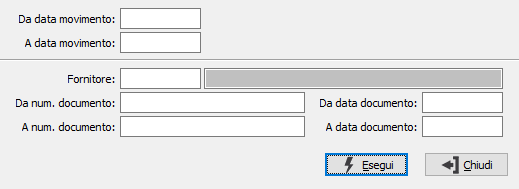

Stampa rientri
Il programma attiva la stampa dei rientri, sulla base dei parametri di selezione inseriti dall’utente.

DA DATA MOVIMENTO: data del rientro da cui si vuole iniziare la selezione. Confermando a vuoto, la selezione inizia dalla prima data valida.
A DATA MOVIMENTO: data del rientro con cui si vuole concludere la selezione. Confermando a vuoto, la selezione inizia dalla prima data valida.
FORNITORE: eventuale codice del fornitore, presente in anagrafica, a cui si vuole limitare la stampa. Confermando a vuoto, la stampa inizia dal primo fornitore valido. Sul campo sono attive le funzioni di ricerca (F9).
DA NUMERO DOCUMENTO: numero del documento di rientro del fornitore da cui si vuole iniziare la stampa. Confermando a vuoto, la selezione inizia dal primo documento valido.
A NUMERO DOCUMENTO: numero del documento di rientro del fornitore con cui si vuole concludere la stampa. Confermando a vuoto, la selezione termina con l’ultimo documento valido.
DA DATA DOCUMENTO: data del documento di rientro del fornitore da cui si vuole iniziare la stampa. Confermando a vuoto, la selezione inizia dal primo documento valido.
A DATA DOCUMENTO: data del documento di rientro del fornitore con cui si vuole concludere la stampa. Confermando a vuoto, la selezione termina con l’ultimo documento valido.